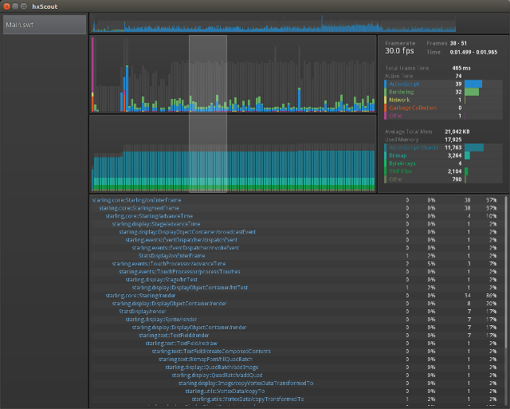

 A free, cross-platform and open source alternative to Adobe Scout, hxScout is a profiling tool for SWF (and soon Haxe*) applications that displays frame timing, memory usage, and profiling information.
Version: 0.1 Beta, ~4MB
Please note that hxScout is in beta - some features are partially implemented, others are planned, and there are probably bugs. Please submit any feedback (comments, bugs, feature requests) to me via Twitter or github.
Profiling with hxScout works just like with Scout. You need to setup a .telemetry.cfg file and compile your SWF with -advanced-teletmetry as documented in Scout's Getting Started Guide.
Once setup, run hxScout, then open this test swf. While timing and profiling information are displayed in any player, note that memory allocations are only displayed from a debug Flash Player (or AIR).
In the future, this section will compare the feature sets of Adobe Scout and hxScout side-by-side. In version 0.1 beta, hxScout displays timing, profiling and memory allocation data. hxScout does not support rendering or Stage3D profiling, and it doesn't currently have all the UI options that Scout does (sorting information, top-down and bottom-up options, customizable panes, etc.)
The goal is not to replicate every feature of Scout, but to provide a tool that supports the highest ROI profiling functions, free for all developers on all platforms, that supports the Flash Platform and beyond.
Adobe Scout, Adobe® AIR®, and Adobe® Flash® are either registered trademarks or trademarks of Adobe Systems Incorporated in the United States and/or other countries.
hxScout is not affiliated with Adobe Systems Incorporated. hxScout is licensed under the MIT license.
{kind=link}